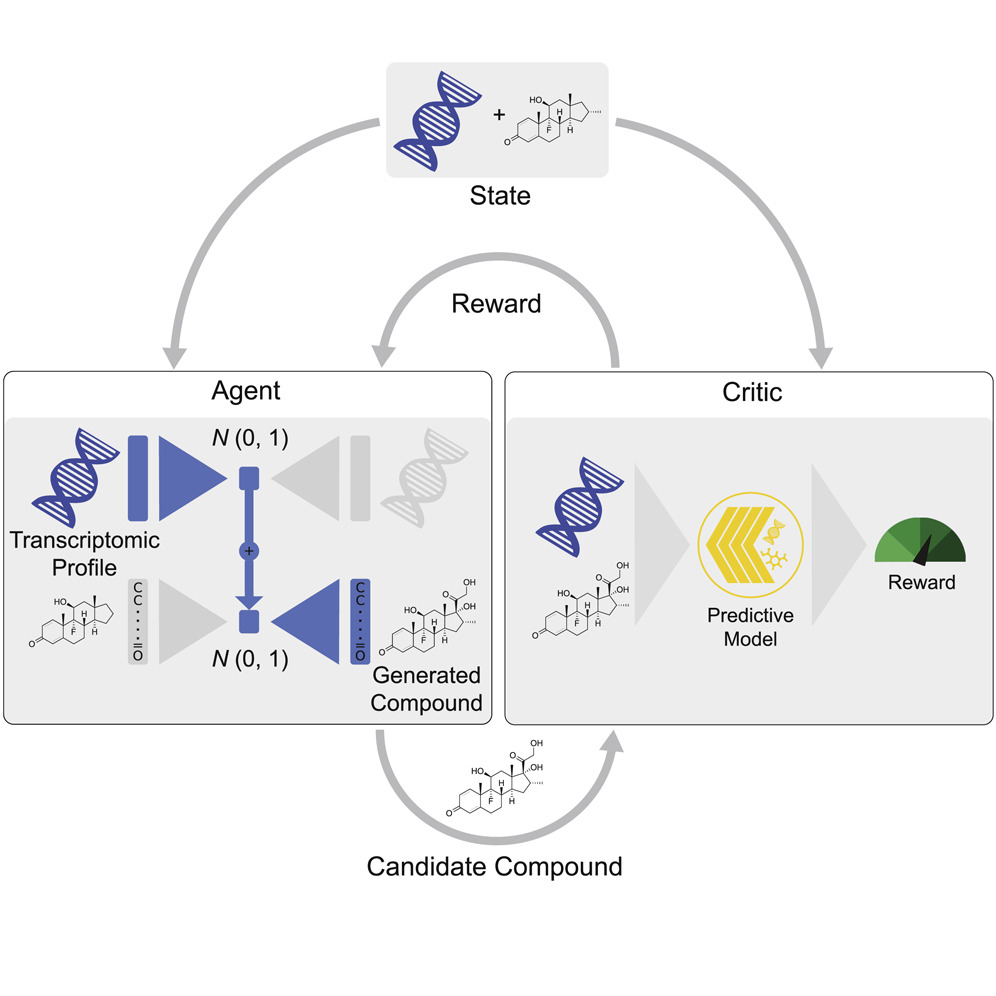

De-novo Molecular Design
Molecular design problem
- Design of new molecules is time and resource intensive task
- Generating promising candidates is one of the main bottlenecks
- Old approach: Expert propose + synthesize + measure candidates in vitro
- Soon-to-be-old way: High throughput virtual screening (HTVS)
Traditional molecular design
Virtual Screening (VS): Brute-force evaluation of huge libraries of compounds to identify structures that improve desired properties (e.g. drug-likeness)
- Structures known a priori
- Although databases are huge, they represent a small portion of the total chemical space
- Concerns about predictive validity and redundancy (Scannell et al., 2016)
De-novo molecular design
Main goal: Traverse the chemical space more effectively (better molecules in less evaluations)
- AI assisted de-novo design \(\rightarrow\) Process of automatically proposing novel chemical structures that optimally satisfy desired properties
De-novo molecular design
Generate compounds in a directed manner
- Reach optimal chemical solutions in fewer steps than VS
- Explore different acceptable regions of chemical space for a given objective (exploration vs. exploitation)
Recap - molecule encoding
- Molecules are 3D QM objects
- Encoding enables to capture certain information
- Trade-off: information loss vs. complexity
Recap - property prediction
Select the model depending on the encoding information
- 1D: Smiles, 1-hot, descriptors, etc.
- Deterministic and Bayesian models
- Deep NNs (+ Bayesian version)
- 2D: Graphs (GNNs)
- 3D: Point clouds (Geometric NNs)
Performance measures (RMSE, \(R^2\), etc.) + assessment of probabilistic predictions
Generative and discriminative models
De-novo design is also referred to as generative chemistry
Discriminative models learn decision boundaries
Generative models model the probability distribution of each class
\(\rightarrow\) Can be instantiated to generate new examples (!)
Not the only way to obtain new compounds…
Requirements
- Validity: Adherence to chemical principles (e.g. valency)
- Uniqueness: Rate of duplicates by the model
- Diversity: Scope of the chemotypes generated
- Novelty: Presence of generated molecules in databases
- Similarity: Similarity between generated molecules and training data
- Synthetic feasibility: Lab-related synthesizability
Untargetted vs. targetted (extra metric to optimize, e.g. QED, PlogP and many more)
Generative models
Targetted generation depends on having a proper characterization of the property of interest
- Property prediction models serve to define an objective function (Session 1)
- Navigate a complex search space
- Gradient-based vs. gradient-free methods
Gradient-based vs. gradient-free
Gradient-based: Models that use the gradient of the objective function to perform optimization
- Training requires fitting parameters using data corpuses
- Usually require lots of data
- E.g.: NN-based approaches (s.a. VAEs)
Gradient-free: Metaheuristic models, based on stochastic population optimization
- “Rule-based” approaches
- E.g.: Evolutionary algorithms
Chemical representations
Chemical representation tailored for each case depending on the data, objective and resources available
- Atomic level: Encode information for each atom and bond
- E.g.: Atom-wise SMILES, graph, 3D coordinates…
- Fragment level: Functional groups, substructures fixed
- E.g.: Benzene as a single group
- Reaction level: Target molecule as product of reactant and reactions conditions
- E.g.: Combinations from library of reactions
Model zoo
| Atom based | Fragment based | Reaction based | |
|---|---|---|---|
| Gradient free | EvoMol* GB-GA |
CReM | AutoGrow4 |
| Gradient based | ChemVAE* EDM* PaccMannRL GraphAF |
JT-VAE | DoG |
Many (many) more… VLS3D list of resources
Gradient based models
ChemVAE
Originally introduced in Bombarelli et al. (2018)
- Combines a Variational Autoencoder and a property predictor
- Meaningful and contiuous latent space
- Uses Bayesian optimization to efficiently explore the latent space
- Led to expansion of VAEs in molecular design
Extension of the ideas from Generative Adversarial Networks (GANs) and autoencoders
Autoencoder
AE: Hourglass-structured NN that encodes and decodes the input information, consisting on an encoder, \(f_\theta(x)\), decoder, \(g_\phi(z)\), and the latent space, \(z\)
Attempts to learn the identity function, i.e. \[ \text{VAE} = g_\phi \circ f_\theta \, \quad s.t. \quad \text{VAE}^*(x) = g_\phi(f_\theta(x)) = x \]

Autoencoder
- Encoder: Maps the input to the latent space \(f_\theta(x) = z\)
- Decoder: Maps latent space to original space \(g_\phi(z) = \hat{x}\)
- Latent space: Low-dimensional representation of \(x\) (\(z\))
Minimize the reconstruction error (\(\epsilon\)): \[ \arg \min_{\theta,\phi} \epsilon(x, \hat{x}) \]
\(\hat{x} \simeq x\) \(\Rightarrow\) Model encodes/decodes correctly
Autoencoder
AE can be seen as generative models
Latent space difficult to navigate
Variational Autoencoders
VAE: Adds stochasticity to the encoding \(\rightarrow\) Regularize latent space
- Instead of encoding to a point, do it to a distribution \(p(z|x)\)
- Sample from the distribution \(z \sim p(z|x)\) and decompose
\[ Loss = \epsilon(x,\hat{x}) + regularizer \]
The regularization forces latent encoding to ressemble a prior: \[ p(z) = \mathcal{N}(0, I) \]
Variational Autoencoders
The encoded data will follow \[ z \sim q(z|x) = \mathcal{N}(\mu_x, \sigma_x) \]
where \(\mu_x\) and \(\sigma_x\) are given by \(f_\theta(x)\), which can be seen as \[ \mu_x = f^1_\theta(x), \quad \sigma_x = f^2_\theta(x) \] being \(f^1\) and \(f^2\) the first and second half of the units of the latent layer
Variational Autoencoders
KL divergence as regularizer (closed form solution) \[ KL(q(z|x)|p(z)) = \sum_{i=1}^n (\sigma_{x,i})^2 + (\mu_{x,i})^2 - log(\sigma_{x,i})-1 \]
Adding noise, we sample from the latent space and decode itChemVAE
ChemVAE: VAE + property predictor
\[ \mathcal{L}_{\text{VAE}} = \epsilon(x, \hat{x}) + KL(q(z|x)|p(z)) + \mathcal{L}_P(x,\hat{x}) \] with \(\mathcal{L}_P(x,\hat{x})\) the property prediction error
- Train all elements together
- Sort the latent space to encode the property information
- Bayesian optimization to move in latent space
- Assume local and smooth behavior
ChemVAE
Fig: (a) ChemVAE architecture (b) Property optimization via BO
ChemVAE - Latent space
Local behavior + interpolation between compounds possible
ChemVAE - Latent space
Property prediction crucial for meaningful latent spaceChemVAE - Comments
ChemVAE - Hands on!
generative_models/ variational_autoencoder/ VAE.ipynb
Only a brief introduction though… Check the original repo for extended functionality
Other models
VAE-based: Recent interest in using reinforcement learning
- PaccMannRL: RL-based approach using 2 VAEs
- Used for SARS-CoV-2 drug discovery (paper)

- Used for SARS-CoV-2 drug discovery (paper)
Diffusion models
EDM: Equivariant diffusion model for 3D molecule generation
- Use a diffusion process instead of a VAE
- \(E(3)\) symmetries: rotation, traslation and reflections
The same principle behind Stable Diffusion
Diffusion models - diffusion process
Diffusion model learns denoising processes (opposite of a diffusion process)
\(\rightarrow\) progressively add Gaussian noise (\(z_t\)) to signal (\(x\)) \[ q(z_t|x) = \mathcal{N}(z_t|\alpha_tx_t, \sigma_t^2I) \] with \(\alpha_0 \approx 1\) and \(\alpha_T \approx 0\) and \(\sigma_t\) the added noise level
Diffusion models - diffusion process
The diffusion process is Markovian with transition distribution \[ q(z_t|z_s) = \mathcal{N}(z_t|\alpha_{t|s}z_s, \sigma_{t|s}^2I)\,, \quad \forall t>s \] with \(\alpha_{t|s} = \alpha_t/\alpha_s\) and \(\sigma_{t|s}^2 = \sigma_t^2 - \alpha_{t|s}^2\sigma_s^2\)
The complete process can be given by: \[ \begin{gathered} q(z_0, z_1, \cdots, z_T|x) = q(z_0|x) \textstyle{\prod_{t=1}^T} q(z_t|z_{t-1}) \\ q(z_s|x, z_t) = \mathcal{N}(z_s|\mu_{t \rightarrow s}(x, z_t), \,\sigma_{t \rightarrow s}^2I) \end{gathered} \] with \(\mu_{t \rightarrow s}(x, z_t)\) and \(\sigma_{t \rightarrow s}^2\) in terms of \(\alpha\)’s , \(\sigma\)’s, \(x\) and \(z\)
EDM
- We know the distribution of the diffusion process at each \(t\)
- Noise applied to atom types and other properties (\(h\)) using their encodings
- Generative process: \(\hat{x} = \phi(z_t, t)\) (denoising \(z_t\))
- \(\phi\) is an \(E(3)\) equivariant graph NN (session 1)
- We undo the path step-by-step minimizing \[ \textstyle{\sum_{t=1}^T} E_{\epsilon_t \sim \mathcal{N}_{xh}(0, I)} \left[ \textstyle{\frac{1}{2}} w(t) ||\epsilon_t - \hat{\epsilon}_t||^2 \right] \] with \(\hat{\epsilon}_t = \phi(z_t,t)\), \(\epsilon_t\) the \(t\)-step diff. and \(w(t)\) via \(\alpha_t\) and \(\sigma_t^2\)
EDM - Overview
Similar to VAE approach, but now only decoding and latent space as pure noise
EDM - Computations
EDM - Conditional generation
EDM performs property optimization with a simple extension of \(\phi\) into \(\phi(z_t, [t, c])\), with \(c\) a property of interest
- Molecules with increasing polarizability (\(\alpha\)), given above
EDM - Hands on!
generative_models/ diffusion/DIFFUSION.ipynb
Gradient free models
Evolutionary algorithms
Key idea:
Population of individuals (states) in which the fittest (highest valued state) produce offspring (successor states) that populate the next generation in a process of recombination and mutation.
Evolutionary algorithms
Many different evolutionary algorithms, they mostly vary on their setup regarding common criteria:
- Population size
- Representation of each individual
- Strings (s.a.
ATGCfor genes), sequences of real numbers (evolution strategies) or even _ computer programs_ (genetic programming)
- Strings (s.a.
- Mixing number (\(\rho\)): number of parents that form offspring (commonly 2, stochastic beam search \(\rho = 1\))
Evolutionary algorithms
Many different evolutionary algorithms, they mostly vary on their setup regarding common criteria:
- Selection process for selecting who will parents of the next generation.
Different options:- Select from all individuals with probability proportional to their fitness score.
- Randomly select \(n\) individuals (\(n > ρ\)), and then select the ρ most fit ones as parents.
- (many more)
Evolutionary algorithms
Many different evolutionary algorithms, they mostly vary on their setup regarding common criteria:
- Recombination procedure
- E.g. \(\rho = 2\), select random crossover point to recombine two parents into two children
Evolutionary algorithms
Many different evolutionary algorithms, they mostly vary on their setup regarding common criteria:
- Mutation rate, or how often offspring have random mutations representation
- Next generation makeup:
- Just the new offspring
- Include a few top-scoring parents from the previous generation (elitism)
- Culling (individuals below a given threshold are discarded)
Evolutionary algorithms
Example: (a) Rank population by fitness levels (b), resulting in pairs (c) from mating and producing offspring (d) which are subject to mutations (e)
Evolutionary algorithms
Child gets the first three digits from the \(1^{st}\) parent (327) and the remaining five from the \(2^{nd}\) parent (48552)
(no mutation here)
Evolutionary algorithms
Schema: Structure in which some positions are left unspecified
- Instances: Strings that match the schema
- Example: 327\(^{*****}\) (all instances beggining with 3, 2, and 7)
- Useful to maintain an interesting piece in evolutionary process
EvoMol
EvoMol - Impletation
EvoMol - Hands on!
generative_models/ evolutionary_algorithm/GENETIC.ipynb